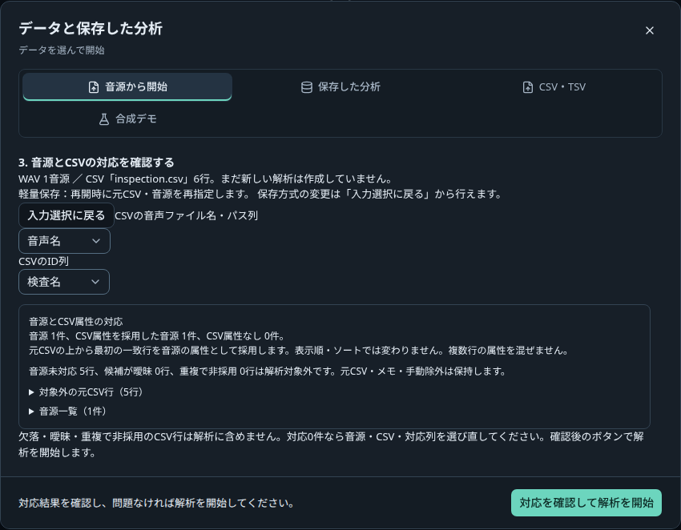
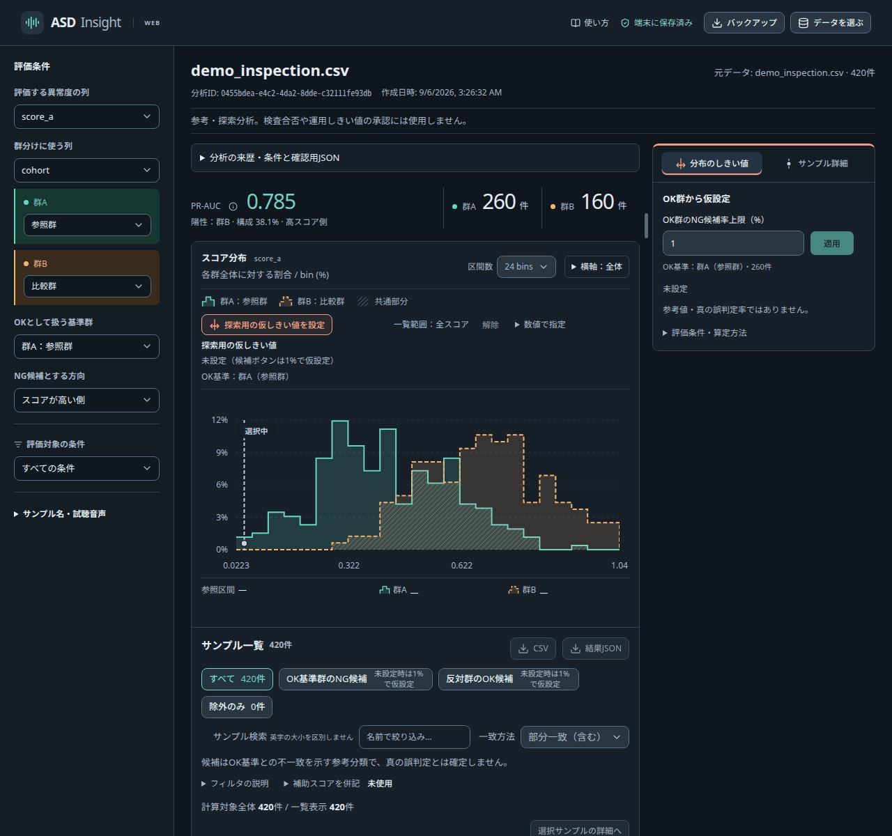
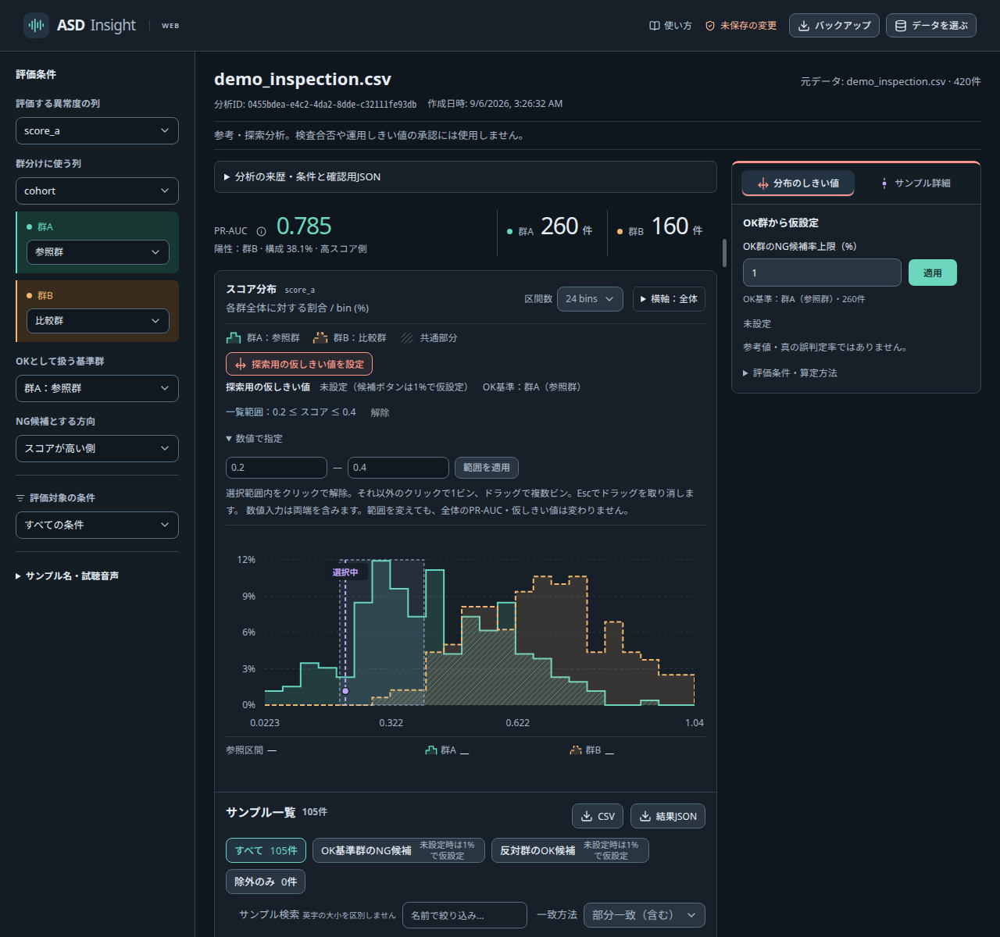
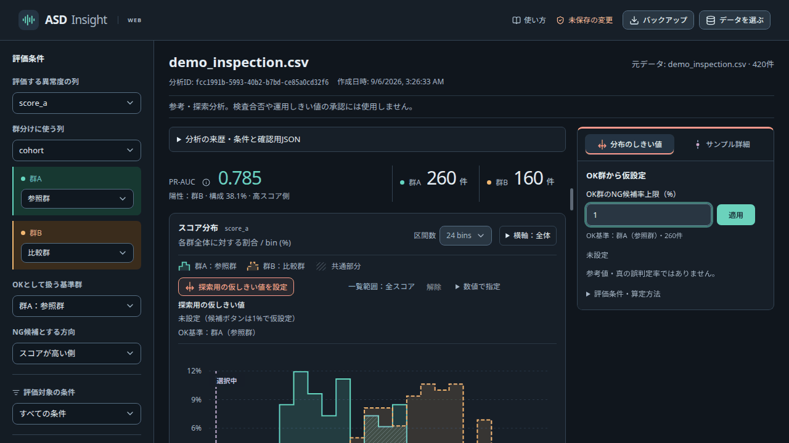
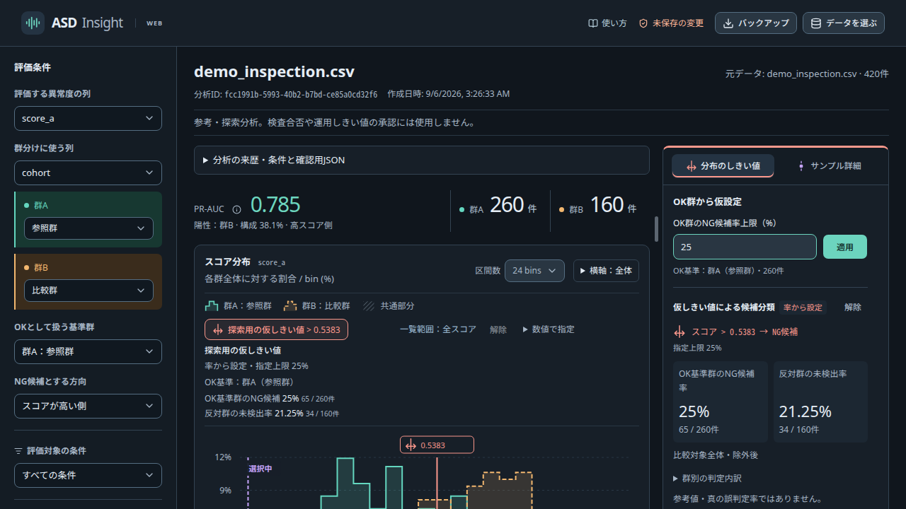
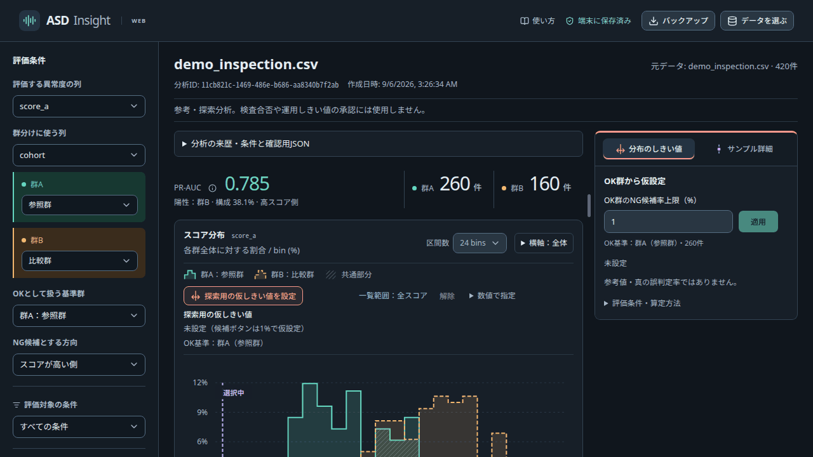
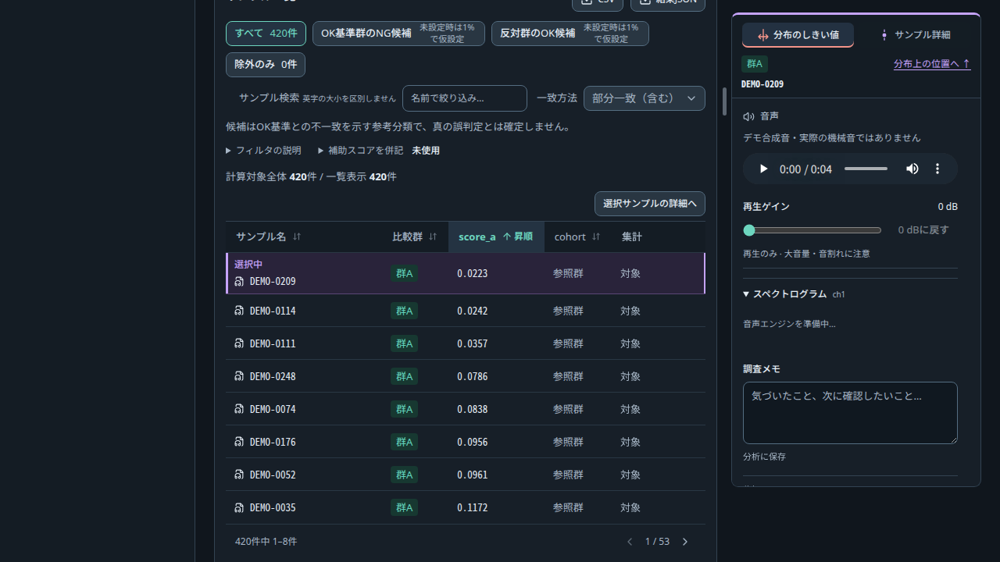
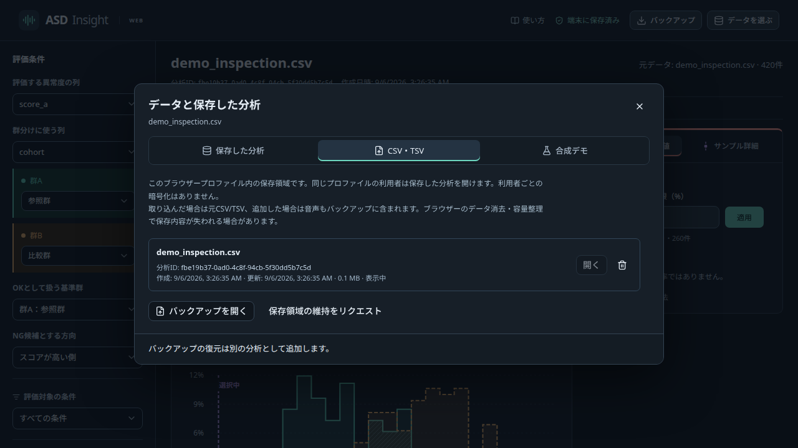

USER GUIDE
分布を見て、気になるサンプルを確認する
データを開いてから、5つの操作で2群の分布の重なりを調べます。
参考・探索分析です。検査合否や運用しきい値の承認には使用しません。
操作動画
練習用データで一連の流れを見る
初めて使う場合は下の現在の入力手順から進めてください。動画は旧画面の参考です。CSVだけで6件を比較する場面は現行の実データ解析と異なり、現在は対応したWAVだけが対象になります。
動画はユーザー操作で再生します。音声なしで、画面上の操作箇所は字幕に対応する枠と番号付きラベルで示しています。枠を表示している場面は、操作後の画面を静止しています。字幕を使えない場合は下の「操作順」を動画の代わりに読めます。
旧動画の操作順（字幕の代わり）
- データを選ぶ → CSV・TSV → inspection.csv → このデータを表示。
- 「評価条件」で「評価する異常度の列」→ 異常スコア、「群分けに使う列」→ 判定群を明示的に選びます。「音源の対応設定・取り込み確認」で「音声のファイル名・パス列」→ 音声名を選びます。
- 正常をOK基準群として確認し、探索用の仮しきい値を設定を押します。
- スコア0.7の区間をクリックすると一覧を1件に絞り、「計算対象全体 6件 / 一覧表示 1件」を確認できます。ヒストグラム上の「選択範囲を解除」を押して戻します。
- WAVフォルダを選択で練習用のsampleフォルダを選び、取り込み前の対応結果を確認して確認して追加を押します。対象行を選択して調査メモを入力し、スペクトログラムを確認します。
- 端末に保存済みを確認し、ページを再読込して、保存した分析から再開します。再開後は「評価条件」と仮しきい値を確認し、未設定なら探索用の仮しきい値を設定を押します。
練習用ファイル
CSVは異常スコアを計算済みの練習データです。このアプリはWAV音声から異常スコアを生成しません。列は「検査名」「異常スコア」「判定群」「音声名」の4列、6行（正常3行・要確認3行）で、音声名がtone.wavなのは1行だけです。現行では対応音源は1件なので、試聴と入力確認の練習用です。2群の分布比較は「合成デモ」で試せます。列名は自動推測に任せず、画面で明示的に選択してください。
WAVは単体ファイルではなくフォルダーを選択します。下のCSVとWAVをダウンロードし、端末に「inspection-data」などのフォルダーを作って、inspection.csvとtone.wavをその直下に保存してください。現在は「音源から開始」で同じフォルダーを選びます。次にCSVを指定し、「解析前の音声対応列」で音声名、「解析前のID列」で検査名を選びます。CSVの音声名tone.wavは、選択したフォルダー直下のWAVを指します。
01
データを開く
実データはWAV音源を単位とし、計算済みスコア・群などをCSV/TSVから付けます。WAVから異常スコアを生成しません。
- 「データを選ぶ」→「音源から開始」でWAVフォルダを選びます。
- CSV/TSVを選び、保存方式を選びます。大容量の音源には「軽量保存」を選びます。
- 「対応を確認」でCSVの音声ファイル名・パス列とID列、採用件数・対象外の理由を確認します。対応0件なら入力や対応列を選び直します。
- 「対応を確認して解析を開始」を押し、「評価条件」でスコア列と群分けを選びます。CSV先行の入口は入力準備で、WAV指定まで集計しません。
元CSVの上から最初の一致行を1音源の属性として採用します。画面の並び替えでは変わらず、重複行の属性を混ぜません。未対応・曖昧・重複非採用のCSV行は通知して解析から外し、元CSV・メモ・手動除外は保持します。
データを選ぶ → 音源から開始 → WAV → CSV → 対応確認 → 解析開始
- スコア
- 数値
- 群分け
- 2値、または数値の境界
- 音声ファイル名・相対パス / ID
- 音源を一意に対応づける列
選択フォルダ直下からの相対パスで照合します。ファイル名だけの場合、候補が一つのときだけ対応づけます。フォルダ階層は群分け・絞り込みの列へ追加されます。
「音源とCSV属性の対応」の採用件数と「音源の指標対象件数」を確認してください。採用後もスコア欠測・比較群欠測・指定群の対象外・条件外・手動除外で指標対象は減ります。WAV数やCSV行数がそのまま解析件数になるわけではありません。
CSVなしでは新規解析を開始できません。作成済みの解析では、CSV属性のない音源も「音源一覧」で再生できますが、スコア・群情報がない音源は分布比較の対象外です。

02
評価条件をそろえる
「評価条件」で、異常度の列と群分けの列を選びます。
群A・群Bに対応する実際の値を確認し、OKとして扱う基準群と、NG候補にするスコアの向きを選びます。数値で群分けする場合は、群Aの上限以下と群Bの下限以上が対象です。
集計条件や手動除外は計算対象を変えます。一覧の範囲・名前検索・候補フィルターは表示を絞る操作です。「計算対象全体 / 一覧表示」の件数を分けて確認してください。
異常度 → 群分け → 基準群を確認
03
分布としきい値を見る
分布上をドラッグすると、気になるスコアの範囲だけに一覧を絞れます。「数値で指定」でも範囲を選べます。ヒストグラム上の「選択範囲を解除」で全スコアに戻ります。範囲を変えても、計算対象全体のPR-AUCは変わりません。
「OK群のNG候補率上限（%）」を指定して仮しきい値を設定します。同点は分割しないため、実測率が指定上限より低くなる場合があります。初期値の1%は操作用の仮値です。
しきい値は探索用の仮値です。「OK基準群のNG候補」「反対群のOK候補」は基準との不一致を示し、真の誤判定とは確定しません。
分布のしきい値ハンドルはドラッグや左右キーで調整できます。Escで取消できます。手動調整後は率の上限を保証しません。表示されたスコアの向きと比較演算子を確認してください。
ドラッグ → 範囲を確認 → しきい値を調整
1 範囲を絞る


2 しきい値を調整


04
サンプルを確認する
一覧の行を選ぶと、分布上の位置とサンプル詳細が切り替わります。音声があれば再生できます。
選択中のサンプルは一覧の先頭にも固定表示され、元の並びの行も残ります。固定表示は件数やCSV出力には重複して含まれません。「列の表示・順序」で列の表示を切り替え、上下のボタンで並びを変更できます。
候補フィルターの2×2の表では、OK基準群・反対群とOK候補・NG候補の交点を選んで一覧を絞れます。分類は探索用で、検査の正誤を確定するものではありません。
名前検索は「部分一致（含む）」と「完全一致」を選べます。英字の大小は区別しません。たとえば部分一致の「normal」は「abnormal」も含むため、1つの名前を指定する場合は完全一致を使います。
サンプルを除外すると計算対象から外れ、指標が再計算されます。除外理由を残し、右の詳細にある「集計に戻す」または一覧の「戻す」から復元できます。母集団が変わった仮しきい値は再設定してください。
波形・スペクトログラムの表示解析はch1です。再生ゲインは解析値を変えません。原音未対応の場合は、詳細に表示される理由を確認し、必要な音声を追加してください。名前の不一致なら、表示される対応候補のファイル名と照合します。
行を選択 → 詳細を確認 → 必要ならメモ


05
保存して再開する
画面上部の保存状態から分析を管理できます。次回は「データを選ぶ」から保存した分析を開きます。
同名の分析は分析ID・作成日時で区別します。「保存中」「未保存」「一時利用」「保存失敗」は「端末に保存済み」と異なる状態です。一時利用の内容はタブを閉じると失われます。
「分析の来歴・条件と確認用JSON」から評価条件、仮しきい値、一覧表示条件、除外・復元履歴、算定方法を確認できます。さらに「データ識別子・hash（全文）」または「確認用JSON（全文・読み取り専用）」を開くと詳しい記録を読めます。履歴が20件を超える場合、全履歴は確認用JSONに含まれます。
「結果JSON」は分析記録、「CSV」は現在の一覧のうち除外行を含まないデータです。再開用のファイルは「バックアップ」の.ovlab形式で保存します。全量保存のバックアップは元CSV・音声本体も含みますが、軽量保存のバックアップには含みません。復元時は別の分析IDになります。
軽量保存は解析設定・メモ・除外履歴と入力の照合情報だけを保存します。再開は「保存した分析」から開き、同じ内容の元CSVを選び直し、画面上部の「WAVフォルダを選択」で元音源を再指定します。音源再指定まで指標は計算せず、調査状態は保持します。軽量バックアップからの復元にも元CSV・音源が必要です。
一部音源の後に完全なフォルダを選び直すと、読込済みの同じ相対パスは内容一致を確認し、不足分を追加します。内容の衝突や既存対応の曖昧化は追加全体を拒否し、取消でも元の分析を保ちます。軽量保存から再指定する音源は保存時のパス・容量・更新日時で照合し、内容の完全一致は保証しません。
同じブラウザープロファイルを使う人は、保存した分析を開けます。SSOは端末内データを利用者別に暗号化するものではありません。ブラウザーデータの消去で失われるため、組織の保存方針に従ってバックアップを保管してください。
端末に保存済み → データを選ぶ → 保存した分析を開く
